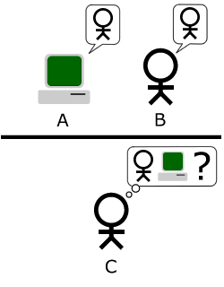

Wann gab es die erste KI?
Die Entwicklung von künstlicher Intelligenz (KI) geht auf die 1950er Jahre zurück. Es ist schwierig, einen genauen Zeitpunkt für die erste KI zu nennen, da die Entwicklung von KI ein schrittweiser Prozess war und es verschiedene Meilensteine gab.
Ein wichtiger Meilenstein war das sogenannte "Dartmouth Meeting" im Jahr 1956, bei dem der Begriff "künstliche Intelligenz" geprägt wurde. Zu dieser Zeit begannen Wissenschaftler wie John McCarthy, Marvin Minsky, Allen Newell und Herbert A. Simon, sich mit der Idee auseinanderzusetzen, dass Maschinen in der Lage sein könnten, menschenähnliche Intelligenz zu entwickeln.
In den folgenden Jahrzehnten wurden verschiedene KI-Techniken und -Ansätze erforscht und entwickelt. Zum Beispiel wurde 1958 der Perzeptron-Algorithmus von Frank Rosenblatt vorgestellt, der als Grundlage für das maschinelle Lernen diente.
In den 1980er Jahren kam es zu einer Phase der sogenannten "KI-Winter", in der das Interesse an KI aufgrund von technischen Herausforderungen und hohen Erwartungen, die nicht erfüllt wurden, abnahm. In den 1990er Jahren erfolgte jedoch ein Wiedererstarken der KI-Forschung, insbesondere im Bereich des maschinellen Lernens und der Expertensysteme.
Seitdem hat sich die KI kontinuierlich weiterentwickelt, und insbesondere in den letzten Jahren haben Fortschritte in Bereichen wie Deep Learning und Big Data zu beeindruckenden Ergebnissen geführt. Es ist jedoch wichtig zu beachten, dass die Entwicklung von KI ein fortlaufender Prozess ist, und wir uns noch immer in einem ständigen Fortschritt befinden.
Die neuste, beste und einfachste Möglichkeit mit einer KI zu schreiben ist Chat-GPT von dem Entwicklerstudio „Openai“.
Der Turing-Test
Der "Turing-Test" ist ein Konzept, das vom britischen Mathematiker und Informatiker Alan Turing in einem 1950 veröffentlichten Aufsatz mit dem Titel "Computing Machinery and Intelligence" eingeführt wurde. Der Test wurde als eine Möglichkeit vorgeschlagen, die Fähigkeit einer Maschine zur menschenähnlichen Intelligenz zu bewerten.
Der Turing-Test basiert auf einer einfachen Vorstellung: Wenn eine Maschine in der Lage ist, in einem textbasierten Kommunikationskanal, wie beispielsweise einem Chat, eine Konversation zu führen, die von einem menschlichen Gesprächspartner nicht von der einer anderen Maschine zu unterscheiden ist, dann könnte man diese Maschine als "intelligent" bezeichnen.
Der Test beinhaltet drei Teilnehmer: einen Menschen (A), eine Maschine (B) und einen menschlichen Richter (C). Der Richter befindet sich in einem separaten Raum und hat keinen direkten visuellen oder physischen Kontakt mit den Teilnehmern. Der Zweck des Tests besteht darin, dass der Richter die Konversationen zwischen A und B beurteilt und versucht, den Menschen von der Maschine zu unterscheiden. Wenn der Richter nicht in der Lage ist, mit einer ausreichenden Genauigkeit zu entscheiden, ob A oder B der Mensch ist, gilt die Maschine als bestanden und hat den Turing-Test bestanden.
Hier gibt es die Möglichkeit sich diesem Test selbst zu unterziehen: https://www.humanornot.ai/
Der Turing-Test hat seit seiner Einführung zu vielen Diskussionen und Debatten über die Natur von Intelligenz und die Möglichkeiten der KI geführt. Obwohl der Test keinen umfassenden Maßstab für Intelligenz bietet und kontrovers diskutiert wird, hat er dennoch als wichtiger Beitrag zur Entwicklung des Feldes der KI gedient.